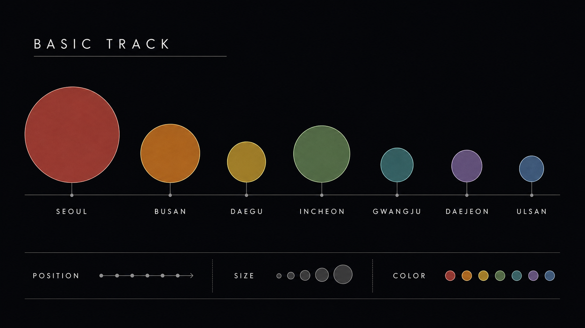

11주차 3교시 — 학생 주도 실습: 데이터 시각화 한 점 완성
강의 아웃라인: week-11-outline 이전 교시: week-11-period2-student (map 매핑, 막대 차트, 나선 아트) 다음 주차: week-12-outline (Perlin Noise)
| 항목 | 내용 |
|---|---|
| 대상 | P5.js 입문자 (테크아트 전공) |
| 소요 시간 | 45분 |
| 사전 준비 | 1교시 data.json, 2교시 시각화·막대·나선 코드 |
| 결과물 | 도시 인구 JSON 기반 시각 작품 1점 (시각화 또는 아트 방향 자유) |
-
preload → loadJSON → for → map → 시각 요소파이프라인을 처음부터 끝까지 직접 완성합니다 - 데이터 시각화 또는 데이터 아트 중 한 방향으로 한 점 작품을 완성합니다
- 시간이 남으면 같은 파이프라인을 다른 방식으로 변주합니다
실습 도입
오늘 만들 것
지금부터는 듣는 시간이 아니라 각자 만드는 시간입니다. 수업이 끝날 때 화면에 데이터 기반 시각 작품 한 점이 떠 있는 것이 목표.
방향은 자유입니다. 막대 차트처럼 정확히 보여줘도 좋고, 나선처럼 예술적으로 표현해도 좋습니다. 다만 반드시 거쳐야 하는 파이프라인은 모두 같습니다.
preload → loadJSON → for문 순회 → map() 매핑 → 시각 요소 그리기환경 셋업
P5.js Web Editor에 접속해서 실습 스케치를 준비합니다.
- P5.js Web Editor 열고 로그인 확인
- File → New로 새 스케치 생성 → 이름을
week11-data로 변경 - 공유 링크를 열고, 스타터 코드와
data.json을 새 스케치로 복사 sketch.js에 빈preload(),setup(),draw()골격이 들어 있는지 확인- 실행 → 빈 캔버스가 뜨면 준비 완료

데이터 한 번 확인
스타터 data.json은 1교시에서 본 5개 도시 + 2개
추가입니다.
{
"cities": [
{ "name": "서울", "population": 9736027, "area": 605 },
{ "name": "부산", "population": 3359527, "area": 770 },
{ "name": "대구", "population": 2385412, "area": 883 },
{ "name": "인천", "population": 2948375, "area": 1063 },
{ "name": "광주", "population": 1455048, "area": 501 },
{ "name": "대전", "population": 1463882, "area": 539 },
{ "name": "울산", "population": 1121592, "area": 1062 }
]
}막히면 5분 안에 손 들기. 혼자 오래 붙잡고 있지 말고 도움을 청하세요. 옆 사람 화면을 참고하는 것도 OK — 다른 사람이 어떤 표현을 시도하는지 보는 것만으로도 영감을 받을 수 있습니다.
단계 1 — 데이터 로드와 콘솔 확인
할 일
preload()안에서data.json을loadJSON으로 불러와cityData변수에 담기setup()에서 캔버스 만들고,console.log(cityData)로 데이터 구조 확인- 실행 → 브라우저 콘솔(F12 또는 Web Editor 하단)에서 객체가 출력되는지 확인
코드 스니펫
let cityData;
function preload() {
cityData = loadJSON("data.json");
}
function setup() {
createCanvas(600, 400);
background(240);
console.log(cityData);
console.log(cityData.cities[0]);
}
function draw() {
// 단계 3에서 채울 예정
}기대 결과
콘솔에 두 줄이 출력됩니다.
{cities: Array(7)}
{name: "서울", population: 9736027, area: 605}막혔을 때
| 증상 | 가능한 원인 | 대응 |
|---|---|---|
콘솔에 null |
파일명 오타 | 파일 패널에서 data.json 정확히 확인 |
undefined만 출력 |
preload 누락 또는 loadJSON이
setup에 있음 |
preload로 옮기기 |
| 콘솔에 아무것도 없음 | 콘솔 창이 안 열림 | Web Editor 하단 콘솔 펼치기 또는 F12 |
Cannot read properties of undefined |
cityData.cities[0]인데 데이터 구조가 다름 |
첫 줄(console.log(cityData))이 객체로 찍히는지부터
확인 |
콘솔에 {cities: Array(7)}이 보이면 단계 1 완료. 멈추지
말고 바로 단계 2로 넘어갑니다.
단계 2 — for문으로 모든 도시 꺼내기
할 일
setup()안에 for문 추가- 각 도시의
name과population을 콘솔에 출력 - 7개 도시가 모두 콘솔에 찍히는지 확인
코드 스니펫
function setup() {
createCanvas(600, 400);
background(240);
let cities = cityData.cities;
for (let i = 0; i < cities.length; i++) {
let city = cities[i];
console.log(city.name + " — 인구 " + city.population);
}
}기대 결과
서울 — 인구 9736027
부산 — 인구 3359527
대구 — 인구 2385412
인천 — 인구 2948375
광주 — 인구 1455048
대전 — 인구 1463882
울산 — 인구 1121592막혔을 때
| 증상 | 가능한 원인 | 대응 |
|---|---|---|
| 한 줄만 출력 | for문 조건이 i < 1 같이 잘못 |
i < cities.length 확인 |
undefined가 섞임 |
키 이름 오타 (Population 등) |
JSON 파일의 정확한 키 이름 다시 확인 |
cities is not defined |
let cities = cityData.cities 누락 |
for문 직전에 한 줄 추가 |
7줄이 콘솔에 깔끔하게 찍히면 단계 2 완료. 이제 화면에 그릴 차례.
단계 3 — 시각 매핑: 화면에 그리기
할 일
- for문 안에
map()을 써서 데이터를 시각 속성으로 환산 - 2개 이상의 시각 속성을 데이터에 매핑 (예: 위치 + 크기)
- for문 안에서
ellipse나rect로 도형 그리기 noLoop()를 추가해서 정적 작품으로 마무리
매핑 결정 — 이렇게 시작해도 됩니다
| 데이터 | 시각 속성 | map() |
|---|---|---|
인덱스 i |
가로 위치 x | map(i, 0, cities.length - 1, 60, width - 60) |
population |
원 크기 | map(city.population, 0, 10000000, 20, 150) |
area 또는 i |
색상 | map(city.area, 500, 1100, 100, 255) |
코드 스니펫 — 출발점
function setup() {
createCanvas(600, 400);
background(240);
noLoop();
let cities = cityData.cities;
for (let i = 0; i < cities.length; i++) {
let city = cities[i];
let x = map(i, 0, cities.length - 1, 60, width - 60);
let y = height / 2;
let size = map(city.population, 0, 10000000, 20, 150);
fill(70, 130, 180, 200);
noStroke();
ellipse(x, y, size);
}
}기대 결과
화면에 도시별로 다른 크기의 원이 가로로 줄지어 표시됩니다. 서울이 가장 크고, 울산·광주가 작은 원으로 보입니다.

막혔을 때
| 증상 | 가능한 원인 | 대응 |
|---|---|---|
| 원이 안 보임 | size가 너무 작거나 음수 |
console.log(size)로 실제 값 찍어보기 |
| 모든 원이 한 자리에 겹침 | x 매핑이 잘못 (모두 같은 값) | map의 첫 인자가 i인지 확인 |
| 원이 화면 밖 | 매핑 출력 범위 과다 | map(... , 20, 150)의 마지막 두 값 줄이기 |
| 캔버스가 매 프레임 깜빡임 | background가 draw에 있어 매번 새로
그림 |
noLoop() 추가하거나 background를
setup으로 |
화면에 7개 원이 데이터에 따라 다르게 보이면 단계 3 완료. 기본 트랙의 핵심 흐름은 완성된 상태입니다.
단계 4 — 표현 다듬기
할 일
기본 형태가 완성된 작품을 한 단계 다듬습니다. 아래 중 두 가지 이상 적용을 권장합니다.
- 도시 이름을 텍스트로 표시 (
text()) - 배경색·도형 색을 직접 골라 분위기 정하기
- 색상 모드를 HSB로 바꿔서 다채롭게
(
colorMode(HSB, ...)) - 도형을 원이 아닌 사각형·선·점으로 바꿔보기
- 정렬 방식을 가로 일렬 외 다른 방식으로 (가운데 정렬, 하단 정렬, 위아래 흔들기)
코드 스니펫 — 텍스트와 색 추가
function setup() {
createCanvas(600, 400);
background(20);
noLoop();
colorMode(HSB, 360, 100, 100, 100);
let cities = cityData.cities;
for (let i = 0; i < cities.length; i++) {
let city = cities[i];
let x = map(i, 0, cities.length - 1, 60, width - 60);
let y = height / 2;
let size = map(city.population, 0, 10000000, 20, 130);
let hue = map(i, 0, cities.length, 200, 360);
noStroke();
fill(hue, 70, 90, 70);
ellipse(x, y, size);
fill(0, 0, 100);
textAlign(CENTER);
textSize(12);
text(city.name, x, y + size / 2 + 18);
}
}체크포인트 — 기본 트랙 완료 기준
네 칸이 모두 체크되면 기본 트랙 완료입니다. 시간이 남으면 아래 확장 활동 중 하나를 골라 도전해보세요.
선택 확장 활동
기본 트랙을 완성했다면, 같은 파이프라인을 변주해보세요. 하나만 해도 좋고, 여러 개를 섞어도 좋습니다.
확장 활동 (a) — 데이터 아트 변주: 나선 배치
같은 데이터를 막대·일렬이 아니라 원형 둘레로 배치합니다. 2교시 나선 코드 참고.
let angle = map(i, 0, cities.length, 0, TWO_PI);
let radius = map(city.area, 500, 1100, 60, 180);
let cx = width / 2;
let cy = height / 2;
let x = cx + cos(angle) * radius;
let y = cy + sin(angle) * radius;확장 활동 (b) — 기온 데이터로 교체
월별 평균기온 CSV를 loadTable로 불러와서, 인구 대신
기온을 시각화합니다.
temperature.csv:
month,avg,max,min
1,-2.4,1.5,-5.9
2,0.4,4.7,-3.4
3,5.7,10.4,1.6
4,12.5,17.8,7.8
5,17.8,23.0,13.2
6,22.2,26.8,18.2
7,24.9,28.8,21.8
8,25.7,29.6,22.4
9,21.2,25.6,17.3
10,14.8,19.6,10.5
11,7.2,11.4,3.3
12,-0.4,3.7,-3.9loadTable("temperature.csv", "csv", "header") +
table.getNum(r, "avg") 패턴으로 막대 또는 선 그래프
만들기.
확장 활동 (c) — 자기 데이터 가져오기
공공데이터포털 또는 서울 열린 데이터 광장에서 관심 주제 CSV를 다운로드해서 자기 파이프라인에 연결합니다.

추천 검색어 예시: “지하철 승하차”, “미세먼지”, “공공자전거 따릉이 대여”.
확장 활동 (d) — 실시간 애니메이션
정적 시각화 위에 draw() 반복을 살려서, 인구가 많은
도시일수록 더 빠르게 진동하도록 만들기. 10주차의 힘 시뮬레이션 +
11주차의 데이터를 합친 표현입니다.
let cityData;
let particles = [];
function preload() {
cityData = loadJSON("data.json");
}
function setup() {
createCanvas(600, 400);
let cities = cityData.cities;
for (let i = 0; i < cities.length; i++) {
let city = cities[i];
particles.push({
x: map(i, 0, cities.length - 1, 60, width - 60),
baseY: height / 2,
y: height / 2,
size: map(city.population, 0, 10000000, 8, 40),
speed: map(city.population, 0, 10000000, 0.01, 0.05),
name: city.name,
});
}
}
function draw() {
background(20, 30);
for (let p of particles) {
p.y = p.baseY + sin(frameCount * p.speed) * 50;
fill(220, 100, 100, 200);
noStroke();
ellipse(p.x, p.y, p.size);
}
}background(20, 30)은 반투명한 검정입니다. 매
프레임 약간씩만 덮으니까 잔상이 남아서 궤적 효과가 생깁니다.
마무리
오늘 만든 파이프라인 한 번 더
각자 화면에 그림 하나씩 떠 있을 것입니다. 표현 방향은 다 다르겠지만, 통과한 길은 모두 같습니다.
preload() → loadJSON() → for문 순회 → map() 매핑 → 시각 요소이 다섯 단계가 오늘의 핵심. 데이터 종류가 바뀌어도, 시각화 방식이 바뀌어도, 이 흐름은 똑같이 작동합니다. 기말 프로젝트에서 데이터를 쓰고 싶을 때 이 순서를 떠올리세요.
작품 저장 확인
- P5.js Web Editor 상단의 저장 아이콘 클릭 또는 Ctrl/Cmd + S
- 스케치 이름이
week11-data로 저장됐는지 확인 - 다음 시간에 다시 열 수 있도록 로그인 상태 유지
12주차 예고
다음 주는 Perlin Noise입니다. 5주차에 배운
random()보다 더 자연스러운 움직임을 만드는 함수.
바람에 흩날리는 잎, 구름의 모양, 산맥의 능선 같은 유기적인
패턴을 코드로 만들 수 있게 됩니다. noise()는
random()의 업그레이드 버전이라고 생각하면 됩니다.
막힌 부분이나 잘 안 된 부분이 있으면 Discord 채널에 캡처와 함께 올려주세요. 다음 시간에 만나요.